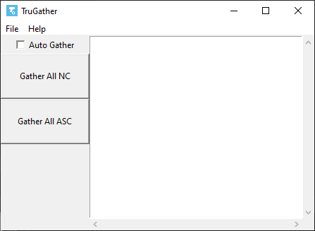

FileGather Help
The Controls
On the left side of the prgram there are three controls for gathering the PRG files.
-
Auto-Gather
- When enabled, the program will continuously checks the NC folder for valid PRG files to be gathered.
-
Gather ALL NC
- When pressed, the program will look through the NC folder once and gather all valid PRG files.
-
Gather ALL ASC
- When pressed, the program will only gather valid ASC files.
- When gathering it will create a new ASC folder, the folder will have the date and the amount of files contained within the folder.
- ASC folder format: month.day_ASC_(no. of files)
The Error Panel
While the program is running, it will check all NC files for errors. If it finds any, they will be displayed on the error panel.
Errors
An error is shown if the file being checked contains a major issue that prevents it from being gathered.
Error Types:
- Subprogram Missing Error
- Shown if the file is missing the $0, $1, or $2 operation.
- Invalid Name Error
- Shown if the file does not meet proper naming conventions.
- Part Length Error
- If the part-length and the cut-off differ by 0.015 or more.
- Missing UG Values Error
- If the case is special and does not UG values
- Internal Name Error
- If the ID in the file name and ID in the first line do not match.
Warnings
A warning is shown if the file being checked contains a minor issue, but will still be gathered.
Warning Types:
- Duplicate PRG Warning
- If there are duplicates of the same PRG file in multiple locations, this warning will be shown.
- When encountering duplicate files, the program will ony gather the first file it finds with that name, subsequent files with the same name will not be gathered.